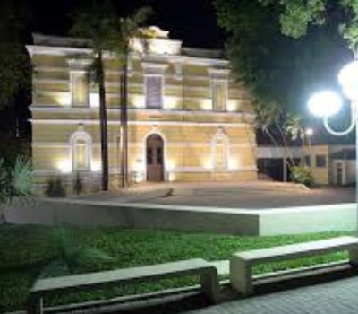

História
A história de Limeira começa oficialmente em 1826, com a doação de terras para a construção de
uma capela em louvor a Nossa Senhora das Dores. Com o tempo, o povoado cresceu e foi se
desenvolvendo ao redor da fé, da agricultura e do comércio.
Durante o século XIX, Limeira teve grande importância no ciclo do café, sendo uma das regiões
que mais produzia o grão no estado. Com o esgotamento do solo para o cultivo de café, a cidade
passou a investir na produção de cana-de-açúcar e, posteriormente, se destacou como grande
produtora de laranja, recebendo o título de "Capital da Laranja" no Brasil por muitos anos.
A cidade também foi um dos primeiros lugares do Brasil a utilizar mão de obra imigrante europeia
após a abolição da escravidão, especialmente italianos, que tiveram grande influência na
formação cultural e econômica da cidade.
Economia
Hoje, a economia de Limeira é uma das mais fortes da região. A cidade possui um setor industrial
bem desenvolvido e diversificado, com destaque para:
Indústria metalúrgica e mecânica: fabricação de peças automotivas, máquinas e equipamentos
industriais.
Joias folheadas e bijuterias: Limeira é conhecida nacionalmente como polo de produção de joias
folheadas, sendo uma das maiores produtoras desse setor no Brasil.
Agronegócio: produção de cana-de-açúcar, laranja e outras frutas, além de atividades de pecuária
e agricultura familiar.
Comércio e serviços: a cidade tem um centro comercial ativo, com shoppings, centros empresariais
e uma infraestrutura moderna que atrai investidores.
Graças à sua localização estratégica, próxima a importantes rodovias como a Anhanguera e a
Bandeirantes, Limeira tem facilidade de escoamento de produção e acesso aos principais centros
urbanos do estado.
Cultura
A cultura limeirense é rica e expressiva. A cidade possui diversos espaços culturais, como
teatros, centros de artes, bibliotecas e museus. A população é bastante envolvida com atividades
culturais e mantém vivas tradições históricas e populares.
Entre os principais destaques culturais da cidade estão:
Festa do Peão de Limeira: evento tradicional que reúne música sertaneja, rodeios e gastronomia
típica.
Festa das Nações: celebra a diversidade cultural da cidade com danças, comidas típicas e
apresentações de várias etnias que ajudaram a formar a população local.
Grupos de teatro, dança e música: diversos grupos locais atuam ativamente na formação artística
e cultural da cidade.
Museu Histórico e Pedagógico Major José Levy Sobrinho: guarda parte importante da história e do
desenvolvimento da cidade.
Além disso, Limeira promove ao longo do ano festivais de música, mostras de cinema, exposições
de arte, feiras literárias e saraus, valorizando os artistas locais e oferecendo opções
culturais para todas as idades.